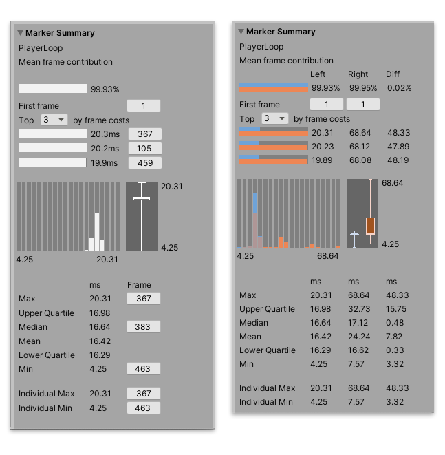

Marker Summary¶
The Marker Summary pane summarizes the marker data of the current selected item in the Marker Details list. You can use this pane to get an overview of the markers that contribute the most amount of time to the data set. For more information on the statistics in this pane, see the Statistics documentation.

The Marker Summary pane, in Single View (left), and Compare View (right)
Statistics¶
Statistic |
Description |
|---|---|
Marker name |
Displays the name of the selected marker. |
Mean frame contribution |
Visualization of the marker’s mean frame contribution as a percentage of the data set’s total time. |
First frame |
Link to the frame that the marker first appeared in. Click the button to jump to the relevant frame in the Profiler window. |
Top by frame costs |
Displays the longest occurrences of the marker in the data set. Use the dropdown to display up to 10 entries in the list. |
Max |
The largest (maximum) frame time in the data selection. In Compare view, the Diff column shows the difference between the Right and Left timings. |
Upper Quartile |
Displays the upper quartile of the data set. In Compare view, the Diff column shows the difference between the Right and Left timings. |
Median |
Displays the median value of the data set. In Compare view, the Diff column shows the difference between the Right and Left timings. |
Mean |
Displays the mean value of the data set. In Compare view, the Diff column shows the difference between the Right and Left timings. |
Lower Quartile |
Displays the lower quartile of the data set. In Compare view, the Diff column shows the difference between the Right and Left timings. |
Min |
The smallest (minimum) frame time in the data selection. In Compare view, the Diff column shows the difference between the Right and Left timings. |
Individual Max |
The maximum value of an individual marker instance. |
Individual Min |
The minimum value of an individual marker instance. |